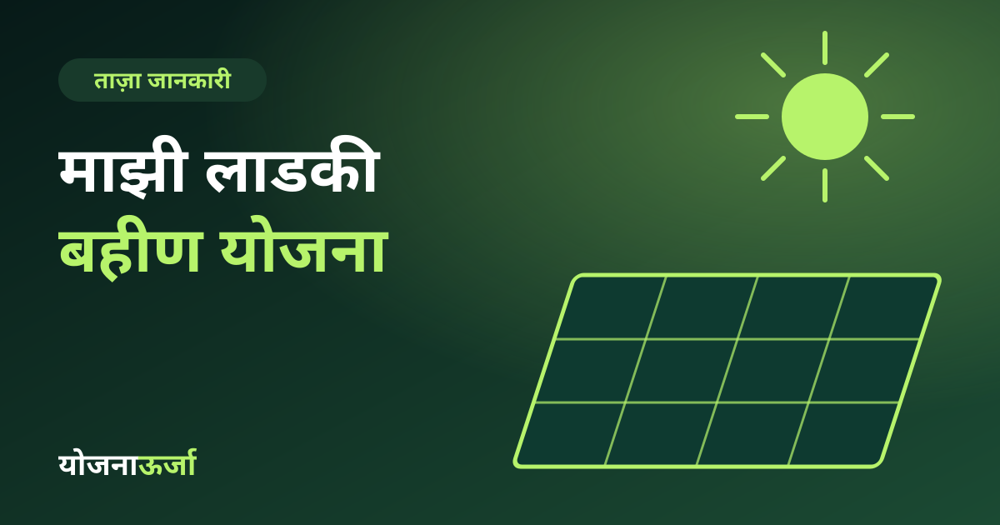

माझी लाडकी बहीण योजना: ई-केवाईसी, पात्रता और ₹1,500 किस्त की पूरी जानकारी
माझी लाडकी बहीण योजना क्या है?
मुख्यमंत्री माझी लाडकी बहीण योजना महाराष्ट्र सरकार की महिलाओं के लिए आर्थिक सहायता योजना है। यह 2024 में शुरू हुई थी और महिला एवं बाल विकास विभाग इसे चलाता है। पात्र महिलाओं को हर महीने ₹1,500, यानी साल में ₹18,000, सीधे बैंक खाते में (DBT) मिलते हैं।
ताज़ा अपडेट (एक नज़र में)
| विषय | रिपोर्टों के अनुसार स्थिति |
|---|---|
| मासिक सहायता | ₹1,500 प्रति माह |
| ई-केवाईसी | सभी लाभार्थियों के लिए अनिवार्य। सितंबर 2025 में शुरू हुई, और तारीख कई बार बढ़ाई गई |
| ई-केवाईसी में सुधार | गलत विकल्प चुनने वालों को सुधार का मौका दिया गया (दिसंबर 2025 और फिर मार्च 2026 तक) |
| अंतिम तारीख | एक रिपोर्ट के अनुसार 30 अप्रैल 2026 अंतिम तिथि थी |
| बंद हुए खाते | PTI के हवाले से रिपोर्ट: अधूरी ई-केवाईसी के कारण लगभग 68 लाख खाते बंद |
| बजट 2026-27 | लगभग ₹26,000 करोड़ (2025-26 में लगभग ₹36,000 करोड़) |
| योजना जारी रहेगी? | मुख्यमंत्री ने मार्च 2026 में योजना जारी रखने की पुष्टि की |
एक और बात: खबरों के अनुसार नमो शेतकरी महासम्मान निधि पाने वाली कुछ महिलाओं की राशि कम की गई है, और कई जगह अपात्र पाई गई महिलाओं के नाम हटाए गए हैं।
पात्रता (कौन ले सकता है लाभ?)
योजना के मूल नियमों के अनुसार:
- महिला महाराष्ट्र की निवासी हो।
- उम्र 21 से 65 वर्ष के बीच हो।
- विवाहित, विधवा, तलाकशुदा, परित्यक्ता या निराश्रित महिला आवेदन कर सकती है। परिवार की एक अविवाहित महिला भी पात्र मानी गई है।
- परिवार की सालाना आय ₹2.5 लाख से कम हो।
- आधार से जुड़ा बैंक खाता हो।
- परिवार में कोई आयकर दाता न हो।
सरकारी नौकरी वाले परिवार और कुछ अन्य शर्तें भी लागू हैं। पूरी सूची आधिकारिक पोर्टल पर देखें।
ज़रूरी दस्तावेज़
- आधार कार्ड
- आधार से जुड़ा बैंक खाता (पासबुक)
- महाराष्ट्र के निवास का प्रमाण
- आय का प्रमाण (पोर्टल की शर्तों के अनुसार)
- पासपोर्ट साइज़ फ़ोटो
- स्व-घोषणा पत्र (हमी पत्र)
ई-केवाईसी कैसे करें?
- आधिकारिक पोर्टल ladakibahin.maharashtra.gov.in खोलें।
- होम पेज पर "e-KYC" बैनर पर जाएँ।
- अपना आधार नंबर डालें और OTP से सत्यापन करें।
- पति या पिता के आधार से भी सत्यापन माँगा जाए तो वह पूरा करें।
- घोषणाओं के सवाल ध्यान से पढ़कर जवाब दें। रिपोर्टों के अनुसार गलत विकल्प चुनने पर कई महिलाएँ गलती से अपात्र दिखा दी गई थीं।
- घोषणा की पुष्टि कर "Submit e-KYC" दबाएँ।
पोर्टल न चले तो आँगनवाड़ी केंद्र, सेतु/सेवा केंद्र या सरकारी ऐप से भी प्रक्रिया पूरी की जा सकती है।
किस्त का स्टेटस कैसे देखें?
- आधिकारिक पोर्टल पर मोबाइल नंबर, पासवर्ड और कैप्चा से लॉगिन करें।
- आवेदन का स्टेटस और भुगतान का विवरण देखें।
- भुगतान या DBT से जुड़ी मदद के लिए हेल्पलाइन 181 पर संपर्क करें।
किस्त न आए तो क्या करें?
- ई-केवाईसी पूरी हुई है या नहीं, पोर्टल पर जाँचें।
- बैंक खाता आधार से जुड़ा है और NPCI मैपिंग हुई है, यह बैंक से पूछ लें। ई-केवाईसी के बाद भी इसकी कमी से भुगतान अटक सकता है।
- ई-केवाईसी में हुई गलती हो तो पोर्टल पर सुधार का विकल्प देखें, और सुधार का समय खुला है या नहीं, यह पोर्टल पर पक्का करें।
- अपने इलाके के आँगनवाड़ी या महिला एवं बाल विकास कार्यालय में पूछताछ करें।
सावधानियाँ
- आवेदन या ई-केवाईसी के नाम पर पैसे माँगने वालों से बचें। सरकारी पोर्टल पर यह प्रक्रिया निःशुल्क है।
- अपना OTP और आधार की जानकारी किसी अनजान व्यक्ति को न दें।
- सिर्फ़ आधिकारिक पोर्टल (
.gov.in) का ही उपयोग करें। नकली वेबसाइट और ऐप से सावधान रहें। - सोशल मीडिया की "तारीख पक्की" वाली खबरों पर भरोसा न करें, पोर्टल की घोषणा देखें।
अक्सर पूछे जाने वाले प्रश्न
क्या हर महीने ₹1,500 ही मिलते हैं?
अभी की रिपोर्टों में ₹1,500 प्रति माह ही बताया गया है। राशि बढ़ाने की घोषणाएँ पहले हुई थीं, पर जब तक सरकारी आदेश न आए तब तक आधिकारिक पोर्टल पर ही राशि देखें।
क्या नया आवेदन अब भी हो सकता है?
यह पोर्टल की मौजूदा स्थिति पर निर्भर है। अभी आवेदन खुले हैं या नहीं, यह आधिकारिक पोर्टल पर ही पक्का करें।
मेरा नाम सूची से कट गया, क्या करें?
पोर्टल पर स्टेटस और कारण देखें। अगर गलती से अपात्र दिखाया गया है, तो सुधार के विकल्प या अपने आँगनवाड़ी/महिला एवं बाल विकास कार्यालय से संपर्क करें।
कोई और सरकारी योजना लेने पर क्या होगा?
कुछ योजनाओं का लाभ लेने वाली महिलाओं की राशि समायोजित हुई है। अपनी स्थिति की पुष्टि पोर्टल या संबंधित कार्यालय से करें।
स्रोत
- Lokmat Times: बजट 2026 और योजना जारी रखने की घोषणा (मार्च 2026)
- Latestly: ई-केवाईसी की तारीख और सुधार की जानकारी
- AngelOne News (हिंदी): ई-केवाईसी सुधार की तारीख और बंद खातों की खबर
- Nagpur Today: ई-केवाईसी अनिवार्यता (नवंबर 2025)
- Patrika: ई-केवाईसी सुधार का अंतिम मौका